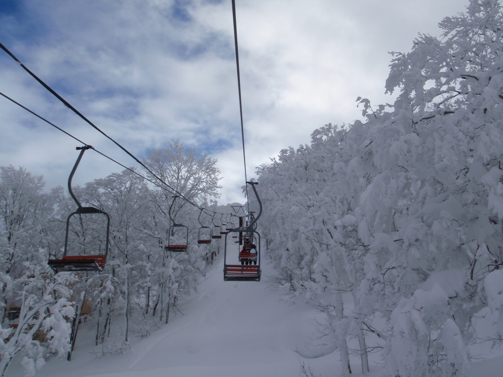
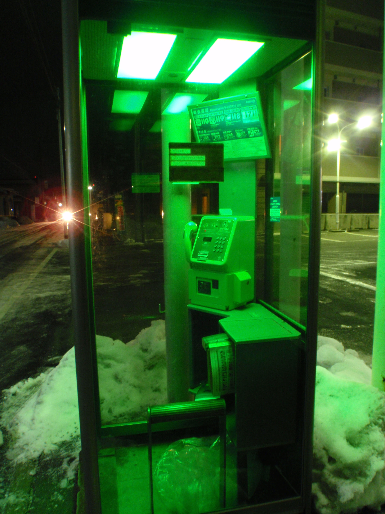

Visit Northern Nihon
While many visitors to Japan have Tokyo and Kyoto on their must see lists, Tohoku is rarely anywhere to be found. Don't be left out of the thrills and beauty of Yamagata.
Yamagata Info
- Yamagata City is located three hours north of Tokyo via the Tsubasa bullet train.
- Festivals such as the Donga Matsuri will transport you into traditional Japanese Culture.
- Enjoy the beautiful ski slopes of Zao, and other resorts.

Zao Resort
See Rare Objects!
- Green tea flavored ice cream
- Mummies
- Telephone Booths!

See you soon.
Visit Yamagata